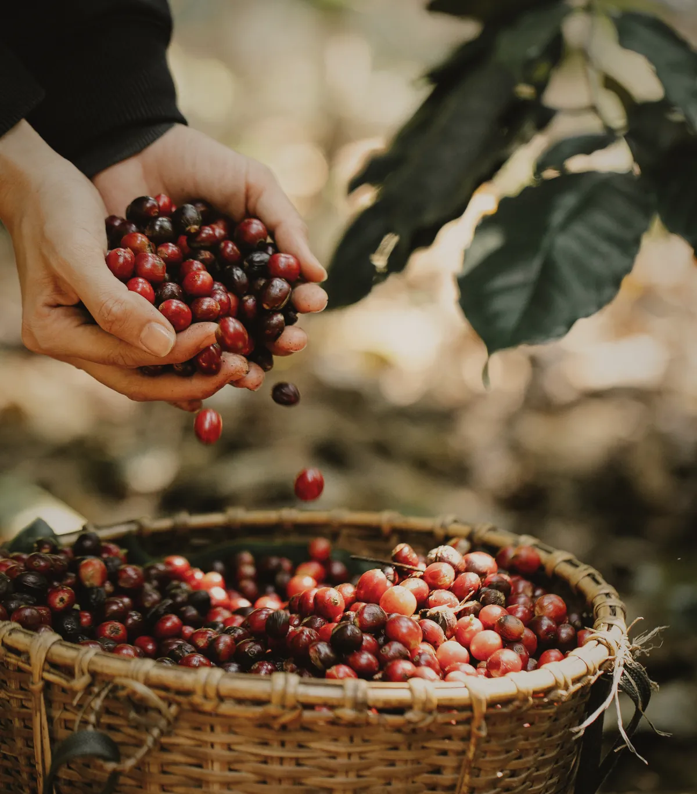

From basket to tank
The cherry is floated to take off the light and damaged fruit, pulped, and left dry in a tiled tank for thirty-six hours while the mucilage breaks down.
Then it is washed in channels until the parchment squeaks. That is the actual test: someone pushes a hand through the beans and listens.